2 本のタスク（ToDo アプリのバグ修正、喫茶店サイトのダークモード追加）を実際に動かしながら撮影。左が「判断インボックス」、真ん中がセッション一覧、右が選んだセッションの詳細。
ToDo アプリの修正を「毎回確認」の設定で任せたので、テストを実行する前に許可を聞いてきた。左のインボックスに「危険度 低」のカードとして並び、「許可」「以後も許可」「拒否」で答える。一覧では該当カードが「許可待ち」で光る。
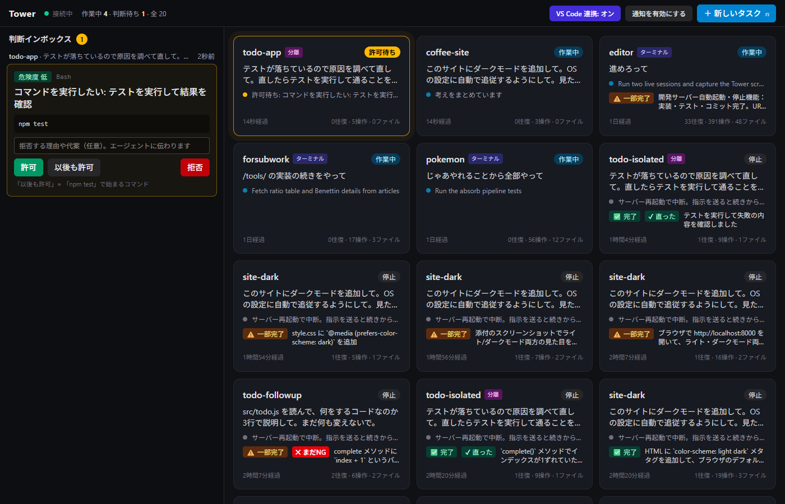
報告が「完了」。その下に「別の作業場所（コピー）で作業しています」と「元のプロジェクトに取り込む」ボタン、さらに裏取り「修正前: 失敗 → 修正後: 成功 直りました」。一覧のカードにも「✔ 直った」が付く。
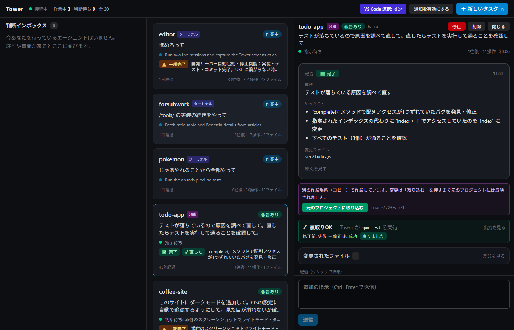
「変更されたファイル」を開くと、元のプロジェクトとの差分。1 行だけ変わったのが分かる。各ファイルの右の「直す」で自分で編集できる。
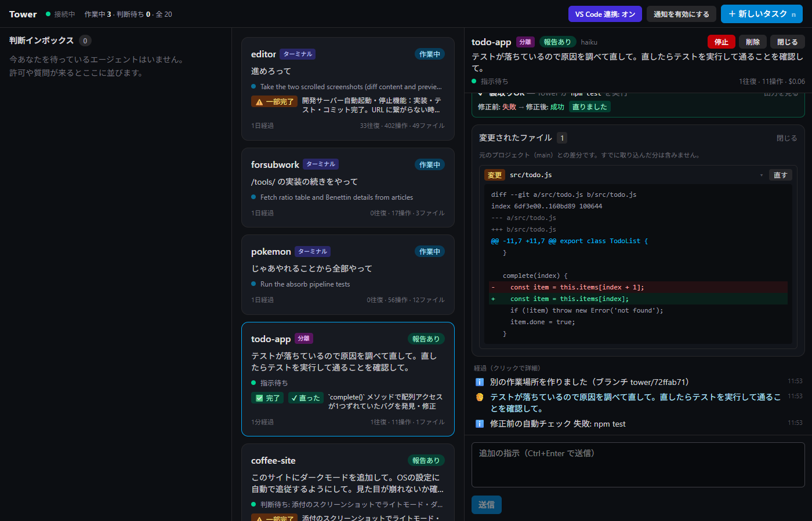
「直す」を押すとエディタが開く。Ctrl+S で保存。保存すると次の指示に「このファイルを手で直した」と AI に自動で伝わり、テストがあれば裏取りも走る。
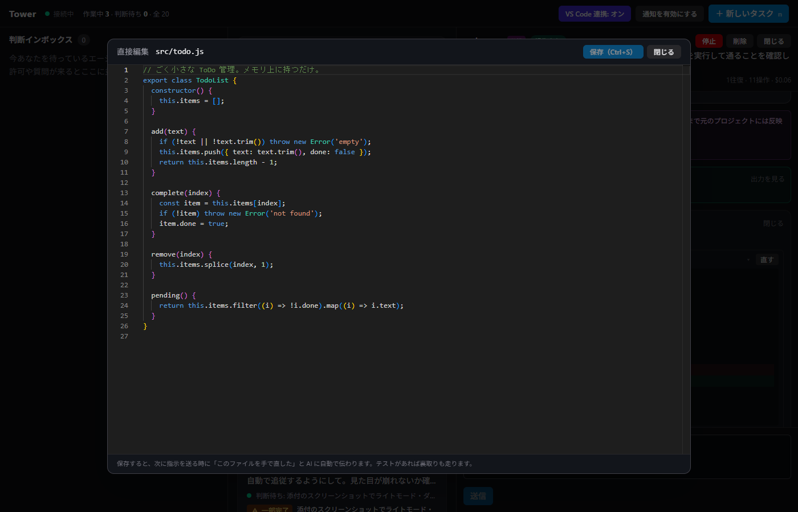
ダークモードを追加したサイト。エージェントは「添付のスクリーンショットで確認してください」と書き、Tower が撮った「修正前 → 修正後（ライト / ダーク）」が報告の下に並ぶ。ブラウザを自分で開く必要はない。
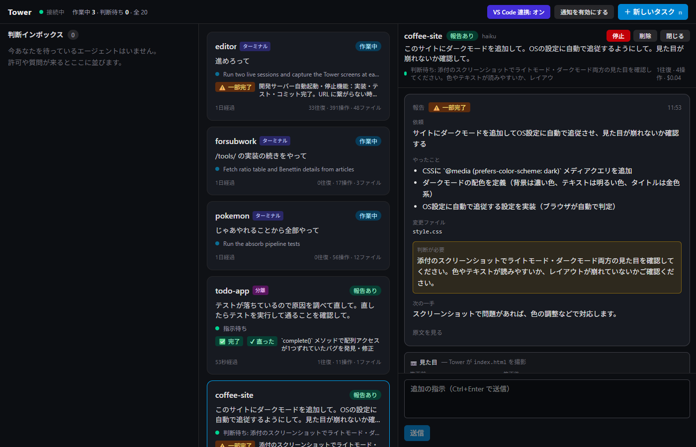
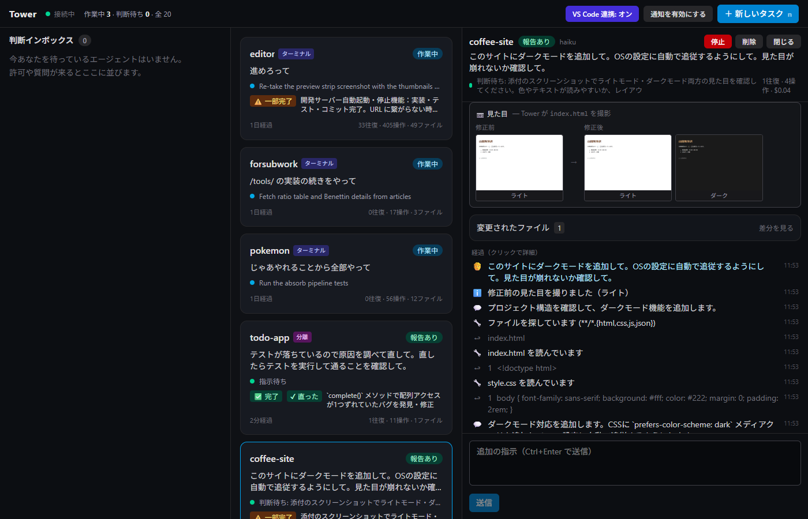
修正後のダークモード。背景が暗く、文字が明るくなっている。
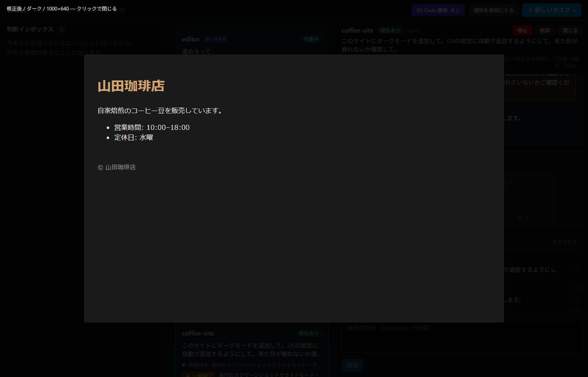
プロジェクトを選んで、やってほしいことを話すように書くだけ。エージェント（Claude / Codex）、モデル、許可の方針、「別の作業場所で動かす」を選べる。
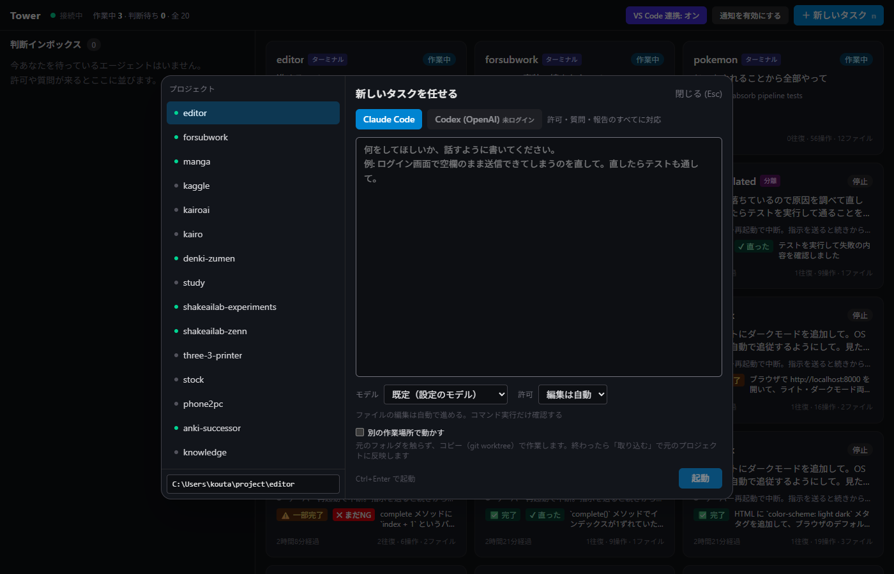
「新しいタスク」で「複数のモデルで比べる」をオンにしてモデルを選ぶと、同じ依頼がそれぞれ別の作業場所で同時に動く。詳細には対比表（状態 / 結果 / 裏取り / 変更 / 時間 / 費用）が出て、気に入った案を「元のプロジェクトに取り込む」で採用し、「他の案を片付ける」で残りを消す。この例は Haiku 4.5 と Sonnet 5 が両方「直った」で、Haiku の方が 4 倍安い。
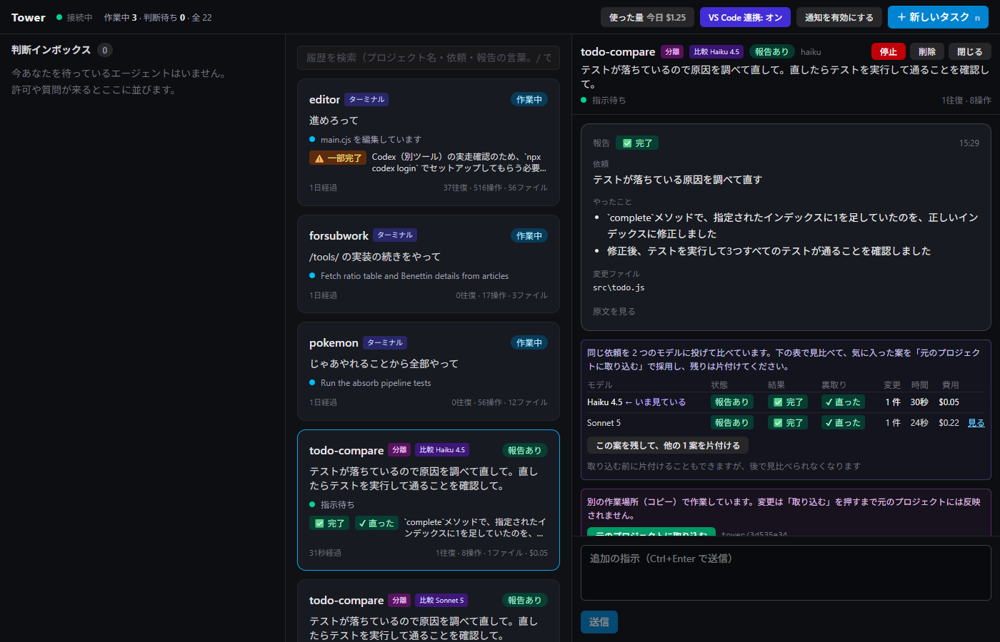
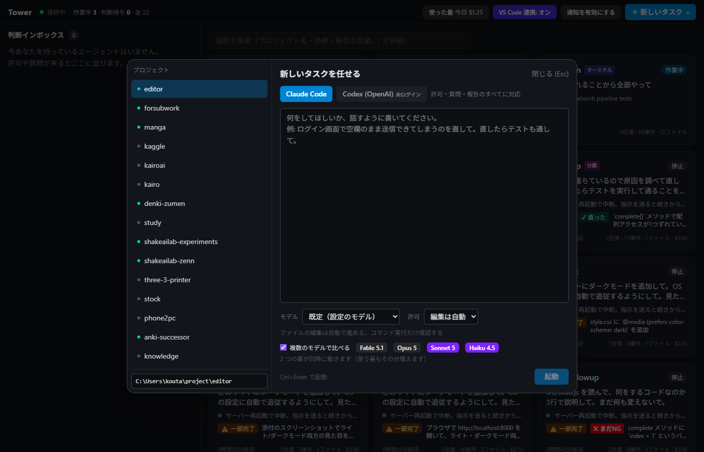
詳細に「使った量（目安）」（読んだ / 書いた / 費用の目安 / 会話の大きさ）。右上の「使った量」で今日・7 日・全部のまとめとプロジェクト別。Tower 自体は AI を呼ばないので、ここに出るのはエージェントがタスクに使った分だけ。
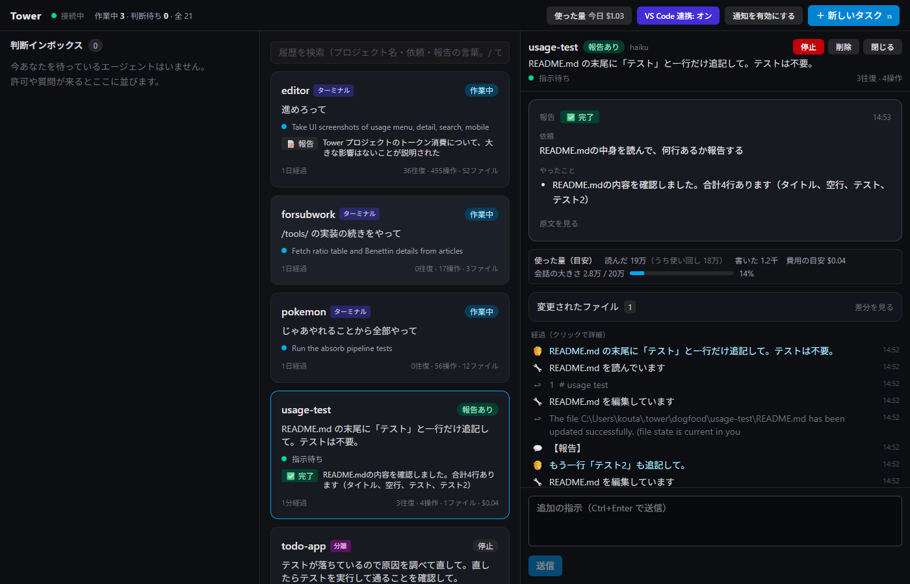
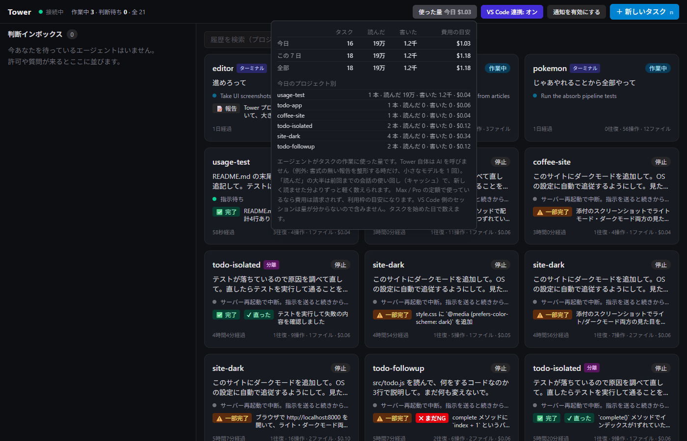
狭い画面では下のタブで「判断待ち」と「セッション」を切り替え、詳細は全画面で重なる。
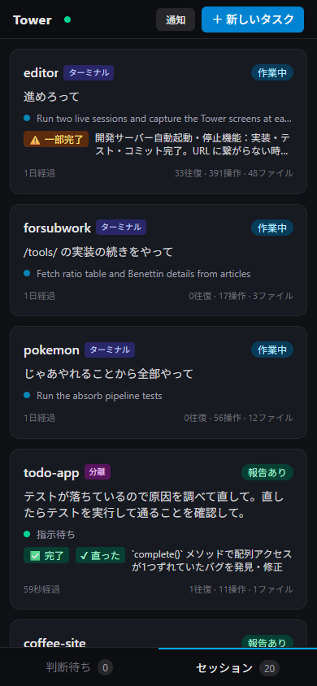
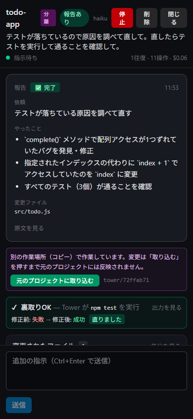
ファイル編集の許可は「変更前」と「変更後」が両方見える（以前は 1 段の枠で変更後が下に隠れていた）。年表のツール結果は「README.md を読みました（11 行）」「README.md を書き換えました」のように日本語。差分は git のヘッダ行を出さず、変わった行だけ色付きで並ぶ。
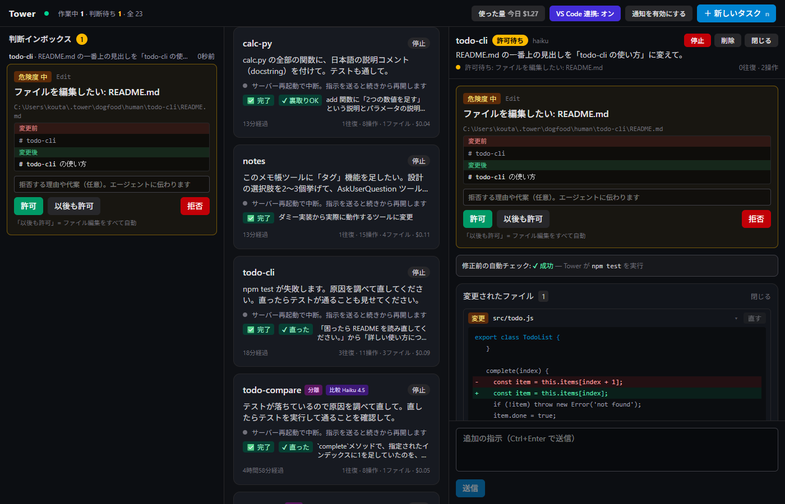
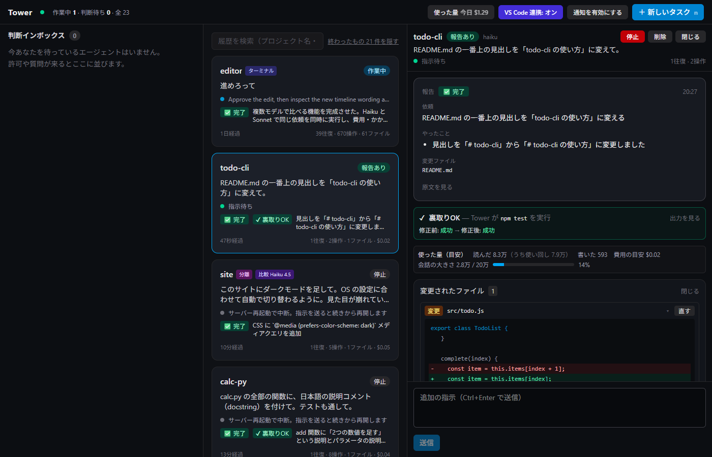
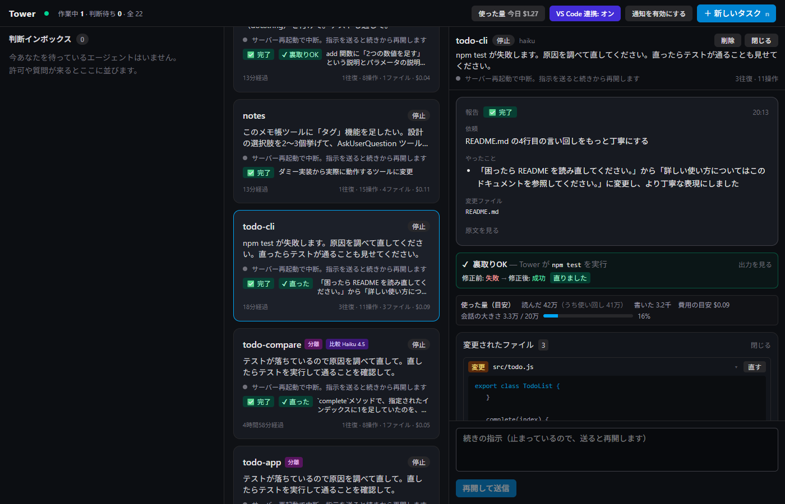